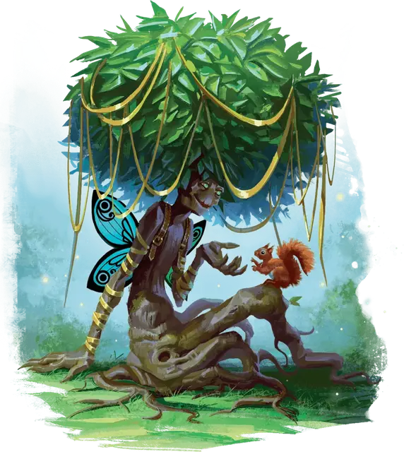

Росток трента
Treant Sapling
Большое Растение, хаотично-доброе

Класс Доспеха 14 (природный доспех)
Хиты 45 (6к10 + 12)
Скорость 30 футов
| мод | спас | ||
|---|---|---|---|
| СИЛ | 17 | +3 | +3 |
| ЛОВ | 8 | −1 | −1 |
| ТЕЛ | 15 | +2 | +2 |
| мод | спас | ||
|---|---|---|---|
| ИНТ | 12 | +1 | +1 |
| МДР | 12 | +1 | +1 |
| ХАР | 10 | +0 | +0 |
Уязвимость к урону огонь
Сопротивление урону дробящий, колющий
Чувства пассивное Восприятие 11
Языки Общий, Друидический, Сильван, Эльфийский
Опасность 2 (450 опыта)
Бонус мастерства +2
Особенности
Обманчивая внешность. Если росток трента не движется в начале боя, он имеет преимущество на бросок инициативы. Более того, если существо не видело движения или действия трента, это существо должно преуспеть в проверке Интеллекта (Расследование) Сл 18, чтобы понять, что трент живой.
Действия
Мультиатака. Трент совершает две атаки Размашистым ударом.
Размашистый удар. . Рукопашная атака оружием: +5 к попаданию, досягаемость 5 футов, одна цель. Попадание: 8 (1к10 + 3) дробящего урона.
Камень. . Дальнобойная атака оружием: +5 к попаданию, дистанция 20/60 футов, одна цель. Попадание: 14 (2к10 + 3) дробящего урона.
Оживление деревьев (1/день). Трент магическим образом оживляет одно или два дерева, которые видит в пределах 60 футов от себя. Деревья обладают статистикой пробужденное дерево [awakened tree], за исключением того, что они не могут говорить. Оживленное дерево действует как союзник трента. Дерево перестает быть живым через 1 день, когда умирает, когда трент умирает или когда отдаляется от него более чем на 120 футов, а также когда трент бонусным действием снова делает его неживым. Став снова неживым, дерево, при возможности, пускает корни.